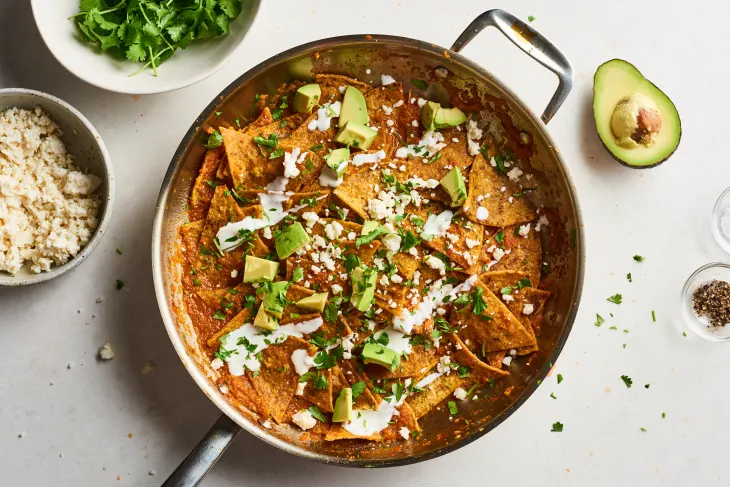

Chilaquiles

when I was growing up, chilaquiles (pronounced “chee-lah-KEE-lehs”) was my favorite Sunday morning breakfast dish. Crispy tortillas swimming in a rich salsa, covered with plenty of cheese? It’s simplicity at its best.
For the chips:
- 1/4 cup vegetable oil, for frying
- 12 corn tortillas, cut into 8 wedges each
- Kosher salt
For salsa roja:
- 4 Roma tomatoes or 2 large tomatoes (about 1 1/2 pounds), chopped
- 1/2 large yellow onion, chopped
- 1 medium jalapeño, sliced (remove the seeds for a less spicy dish)
- 2 cloves garlic
- 1 1/4 cups low-sodium chicken or vegetable broth, divided
- 2 teaspoons vegetable oil
- Kosher salt
INSTRUCTIONS
- Fry the tortillas Heat 1/4 cup oil in a large skillet over medium-high
- Drain the tortilla chips. Drain the freshly fried tortilla chips on a paper towel-lined baking sheet. Sprinkle lightly with salt. Repeat this process until all tortillas are fried, adding more oil if needed.
- Make the salsa roja. Place the tomatoes, onion, jalapeño, and garlic in a blender or food processor fitted with the blade attachment. Pour in 1 cup of the broth. Blend until smooth.
- Cook the salsa.
- Heat 2 teaspoons oil in a large skillet over medium-high heat until shimmering. Add the salsa and cook, stirring occasionally, until slightly thickened, 5 to 10 minutes (the consistency of the salsa will vary depending on the size and juiciness of the tomatoes). Add additional broth to thin out the salsa, if needed. Taste and season with salt as needed.
- Coat the chips with the salsa.
- Add the tortilla chips and stir carefully to coat the chips. Cook until the tortillas are heated through, about 3 minutes. Taste and season with salt as needed.
- Serve warm.Serve warm garnished with avocado or guacamole, crema, queso fresco, and/or fried eggs, if desired.
RECIPE NOTES
Make ahead:The chips and salsa roja can be made in advance. Use additional chicken or vegetable broth to warm the salsa if needed.
Storage:Leftover chilaquiles can be stored for up to 1 day.